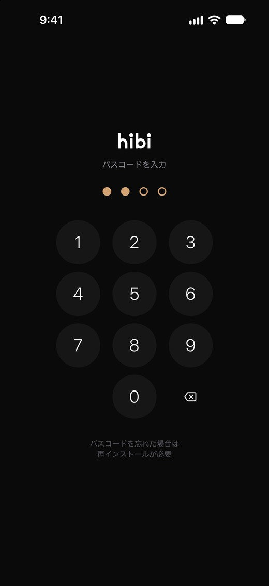
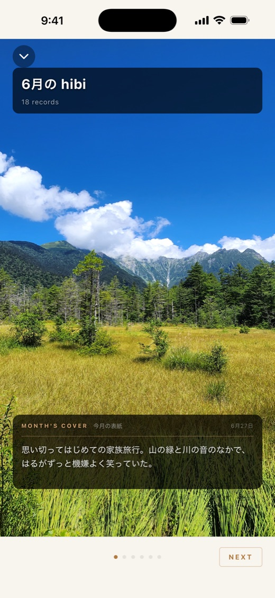
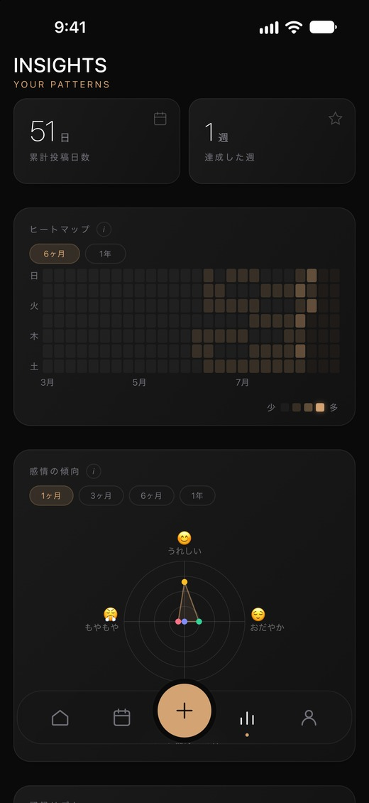
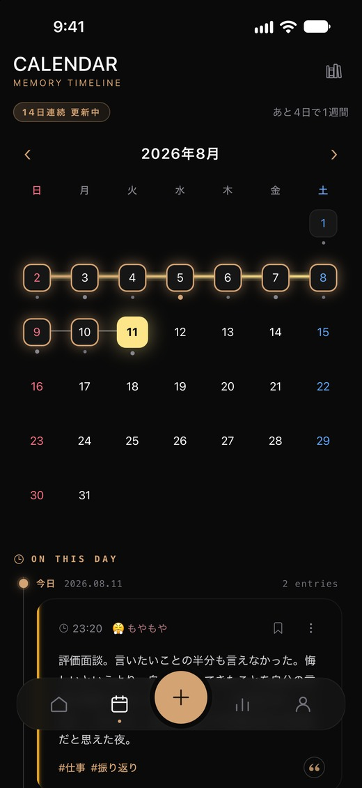
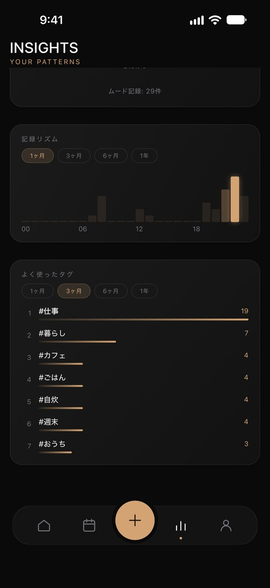

hibi読み返す日のための、
日記。
ひとことから、
自分だけの日記を始める。
hibi は、毎日の出来事や気持ちを、気軽に残せる日記アプリです。
- 無料
- 広告なし
- iOS / Android

誰にも見せないから、
何でも書ける。
日記は、あなたの端末の中だけに。
- 01
日記は、あなたの端末の中に保存されます。hibi の運営者がアクセスする手段はなく、広告 ID も、第三者の追跡もありません。
- 02
バックアップは、あなたの Google Drive へ。保存先はあなたが管理する場所であり、hibi の運営者は閲覧できません。
- 03
パスコードと、指紋や顔の認証で、hibi に鍵をかけられます。アプリを離れるたびに鍵がかかり、ほかの人には開けません。
- 04
日記はいつでも、テキストや CSV で書き出せます。あなたの記録を、ひとつのアプリに閉じこめません。

あの日の言葉が、今日届く。
「あの日の今日」を開くと、1 週間前、1 か月前、6 か月前、1 年前と、過去の記録が今日に並びます。書いた翌週から、読み返しが始まります。

あの日の続きを、今日書く。
過去の記録を引用して、その続きを今日の日記に書けます。あの日の言葉と今日の言葉が、つながって残ります。

ひとことが、絵になる。
最大 140 文字のひとこと。書いた記録は、本文の長さや写真の有無に応じて自動で異なるカードに変わり、それぞれの日の気持ちが、それぞれのカードで残ります。


日々が、模様になる。
ホームをギャラリーに切り替えると、日記に添えた写真がタイルで並びます。文字ではなく、写真で日々をたどれます。

先月のあなたを振り返る。
ひと月が終わると、その月の記録を、月の表紙とハイライトでふり返れます。マンスリーレポートは本棚に並び、いつでも読み返せます。


あなたの世界観を、選ぶ。
テーマは 4 種類（ミッドナイト / ひだまり /雨上がりの森 / 夏の空）から選べます。選んだテーマで、アプリ全体の色合いが変わります。


ミッドナイト
ひだまり
雨上がりの森
夏の空
書く、だけじゃない。
書いてきた日々をふり返る道具も、続けるためのしくみも、そろっています。
- 統計

書いた日々を、見渡す
記録の頻度を光の粒で描くヒートマップ、気持ちの傾向、書く時間帯のリズム、よく使ったタグのランキングでふり返れます。
- カレンダー

続けた日も、おやすみの日も
書いた日をカレンダーでたどれて、何日続けて書いているかも分かります。
- タグ・気持ち・場所

その日の手ざわりも、残す
タグと、4 つの気持ちと、場所を添えて残せて、あとからタグごとに読み返せます。
- リマインダー
書いていない夜だけ、そっと
オンにすると夜 20:00 に届く、端末の中だけで作られるお知らせです。
- ロック
開けるのは、あなただけ
4 桁のパスコードと、指紋や顔の生体認証で、アプリに鍵をかけられます。
- 取り込み
これまでの日記も、一緒に
他の日記アプリからのお引っ越しも、CSV で取り込めます。
取り込み方を見る
hibi のこと。
SNS は、誰かに見られる前提の場所です。
SNS には書けないことも、気軽に書けて、誰にも見られない。
そんな日記がなかったので、hibi をつくりました。
hibi は、日記を書くことだけでなく、読み返すことも大切にしています。
1 年前の今日、自分は何を書いていたのか。
読み返すたびに、変わったことも、変わらなかったことも見えてきます。
書く前に、
知っておきたいこと。
- 書いた日記は、どこに保存されますか？
あなたの端末の中です。hibi には、日記を預かるサーバーがありません。バックアップを設定したときだけ、あなたご自身の Google Drive にも保存されます。
くわしく- hibi の運営者に、日記を見られることはありますか？
ありません。運営者には、日記の本文・写真・動画を見る手段がありません。アプリの改善のために受け取るのは、どの画面が開かれたかといった匿名の利用状況だけで、日記の中身は含まれません。
くわしく- 機種変更しても、日記は引き継げますか？
バックアップを設定していれば、新しい端末で同じ Google アカウントにログインして、復元するだけで戻せます。バックアップがなくても、CSV で書き出して取り込めます（写真・動画はのぞきます）。
くわしく- ほかの人に見られないように、ロックできますか？
できます。4 桁のパスコードを設定でき、端末が対応していれば、指紋や顔の認証でも開けます。パスコードは、運営者を含めて誰にも確認・解除できません。
くわしく
現在、すべての機能を無料で利用できます。
アプリ内課金はありません。
hibi について
hibi は、BMTX が提供・運営している日記アプリです。
- 提供者
- BMTX
- アプリ名
- hibi － 読み返す日のための、日記。
- 種別
- 日記アプリ（ライフスタイル）
- 対応 OS
- iOS / Android
- 表示言語
- 日本語 / English
- 料金
- 現在、すべての機能を無料で利用できます。アプリ内課金はありません。
- App Store
- https://apps.apple.com/jp/app/id6799611736
- Google Play
- https://play.google.com/store/apps/details?id=jp.bmtx.hibi
- 公式サイト
- https://hibi.bmtx.jp
- 公開日
- 2026 年 8 月 18 日（その後の更新は「お知らせ」に掲載しています）